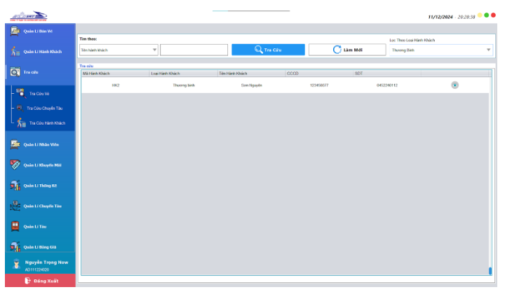

CHỨC NĂNG CỦA NHÂN VIÊN BÁN VÉ
I. Đặt vé
Màn hình chức năng bán vé
Bước 1:Người dùng chọn thông tin cho các ga đi, ga đến, loại vé,
ngày đi và có thể tùy chọn
tìm kiếm theo loại ghế, loại tàu, sau đó nhấn nút tìm kiếm
Bước 2:Chọn các chuyến tàu phù hợp với yêu cầu của hành khách

Bước 3:Lựa chọn toa phù hợp và chọn số lượng ghế theo yêu cầu
Bước 4:Lựa chọn loại hành khách nếu: khách hàng thuộc các diện
theo quy định và cung cấp các
giấy tờ liên quan
Bước 5:Nhập căn cước công dân hoặc số điện thoại của người mua để
tìm kiếm trong cơ sở lưu
trữ, nếu thông tin người mua đã có sẽ hiển thị tên người mua
Ngược lại, nếu không tìm thấy sẽ hiển thị thông báo, người dùng cần thêm hành khách bằng nút thêm hành khách
trước để hoàn thành việc đặt vé
Bước 6:Chọn khuyến mãi phù hợp
Bước 7:Chọn phương thức thanh toán
Bước 8:Nhấn đặt vé
Đối với thanh toán tiền mặt, hệ thống sẽ tiến hành in vé vé hiển thị thông báo lên màn hình
Đối với thanh toán trực tuyến, cần chọn cổng thanh toán, sau khi thanh toán thành công, nhấn nút xác nhận
thanh toán để tiến hành xuất vé
II. CHỨC NĂNG ĐỔI VÉ
Màn hình chức năng đổi vé
Bước 1: Nhập thông tin vé cần đổi, hệ thống sẽ hiển thị trạng thái
của vé.
Nếu vé hợp lệ, hệ thống sẽ hiển thị danh sách các chuyến tàu có cùng ga đi và ga đến.
Bước 2: Chọn chuyến tàu, ga và ghế theo yêu cầu của hành khách.
Bước 3: Chọn phương thức thanh toán và nhấn nút đổi vé.
Đối với thanh toán tiền mặt, hệ thống sẽ tiến hành in vé và hiển thị thông báo lên màn hình.
Đối với thanh toán trực tuyến, cần chọn cổng thanh toán. Sau khi thanh toán thành công, nhấn nút xác nhận
thanh toán để tiến hành xuất vé.
III. CHỨC NĂNG TRẢ VÉ
Bước 1: Tại giao diện tra cứu vé, nhập mã vé để tìm kiếm.
Bước 2: Chọn vào biểu tượng thùng rác để tiến hành hủy vé.
Bước 3: Tiến hành chọn phương thức thanh toán và nhấn nút hủy
vé.
Đối với thanh toán trực tuyến, cần chọn cổng thanh toán. Sau khi thanh toán thành công, nhấn nút xác nhận
thanh toán để hoàn thành hủy vé.
IV. CHỨC NĂNG THÊM HÀNH KHÁCH
Bước 1: Nhập thông tin hành khách vào các trường tương ứng.
Bước 2: Nhấn vào nút “Thêm” để tiến hành thêm hành khách. Sau khi
thêm thành công sẽ hiển thị
thông báo thêm hành khách thành công.
v. CHỨC NĂNG CẬP NHẬT HÀNH KHÁCH
Bước 1: Nhấp vào hành khách muốn cập nhật thông tin ở bảng bên
dưới. Các thông tin sẽ được
đẩy lên các trường tương ứng ở bên trên.
Bước 2: Thay đổi thông tin cần thiết ở trường bên trên.
Bước 3: Nhấn nút “Cập nhật” để cập nhật thông tin mới cho hành
khách. Sau khi cập nhật thành
công sẽ hiển thị thông báo cập nhật hành khách thành công.
VI. CHỨC NĂNG XUẤT FILE THÔNG TIN HÀNH KHÁCH
Bước 1: Nhấn nút “Xuất file” để xuất file thông tin hành khách.
Bước 2: Sau khi nhấn nút sẽ hiện lên hộp thoại tương ứng. Chọn vị
trí lưu file và sửa tên
file tương ứng, sau đó nhấp vào nút “Save” ở phía dưới hộp thoại.
Bước 3: Hiển thị thông báo xuất file thành công. Nhấp vào nút “OK”
để kết thúc.
VII. CHỨC NĂNG TRA CỨU THÔNG TIN HÀNH KHÁCH
Bước 1: Chọn tìm hành khách theo “Tên hành khách”, “CCCD” hoặc
“SĐT”.
Bước 2: Nhập thông tin tương ứng vào thanh tìm kiếm.
Bước 3: Nhấn nút “Tra cứu” để tra cứu thông tin hành khách. Thông
tin hành khách sẽ được hiển
thị ở bảng bên dưới.
VIII. CHỨC NĂNG LỌC HÀNH KHÁCH/h2>
Bước 1: Chọn lọc hành khách theo các loại tương ứng.
Bước 2: Thông tin các hành khách tương ứng sẽ hiển thị ở bảng
bên dưới.
